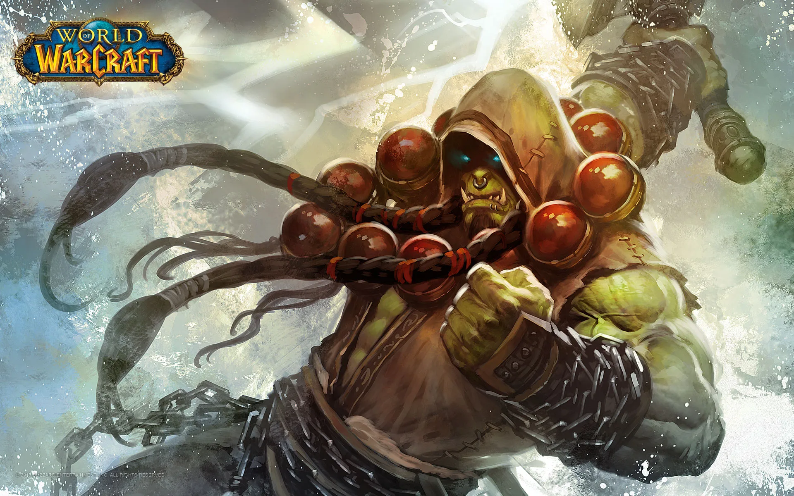

A Horda
.jpg)
A Horda é uma das duas facções jogáveis do World of Warcraft, a outra sendo a Aliança. A Horda é composta por várias raças, incluindo orcs, trolls, taurens, mortos-vivos (renegados), elfos sangrentos e goblins. A história da Horda remonta ao tempo em que os orcs foram corrompidos pelo maligno feiticeiro Gul'dan, e levados ao mundo de Azeroth para conquistá-lo em nome de seu mestre, o vil demônio Sargeras. Depois de muitas batalhas, os orcs se libertaram da corrupção e se uniram a outras raças para formar a Horda. A Horda é conhecida por sua força e ferocidade em batalha, bem como por sua honra e lealdade a seus líderes. Os jogadores da Horda têm acesso a habilidades e equipamentos exclusivos, bem como a locais e missões únicas. Na história do World of Warcraft, a Horda tem lutado contra a Aliança em várias guerras e conflitos, embora também tenha enfrentado ameaças de inimigos externos, como a Legião Ardente. A Horda é liderada por vários líderes, incluindo o atual chefe de guerra, Sylvanas Correventos, que se tornou controversa após eventos recentes na história do jogo.
Chefe guerreiro
O Chefe Guerreiro é o líder supremo da Horda no universo ficcional de Warcraft e no jogo World of Warcraft. O Chefe Guerreiro é geralmente escolhido entre as raças da Horda, como os orcs ou os trolls, e é responsável por liderar e representar a facção em questões políticas e militares. Na história do jogo, a posição de Chefe Guerreiro já foi ocupada por personagens como Orgrim Doomhammer e Thrall. Atualmente, a posição é ocupada por Sylvanas Correventos, que se tornou a Chefe Guerreira após a renúncia de Vol'jin e é uma personagem controversa na história do jogo. A liderança da Horda é geralmente decidida por meio de um processo político, como eleições ou indicações, embora a escolha do Chefe Guerreiro possa ser influenciada por tradições culturais e valores de honra e lealdade. A liderança da Horda também é compartilhada com outros líderes de raças individuais, como Baine Casco Sangrento dos taurens ou Lor'themar Theron dos elfos sangrentos. No jogo, a liderança da Horda é representada pelos jogadores em cargos de alto escalão, como chefes de clãs e generais. Os jogadores da Horda trabalham juntos para completar missões, batalhas e outras atividades, seguindo as diretrizes da liderança da facção.